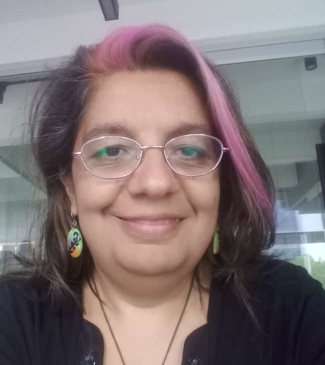
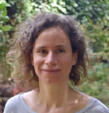
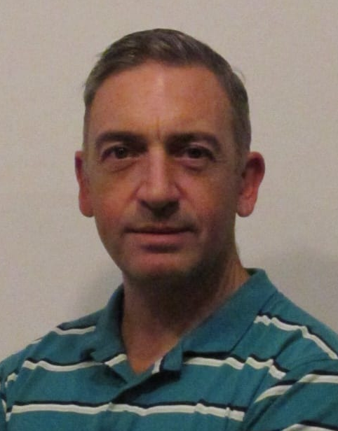
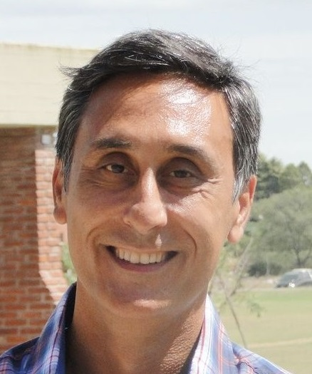
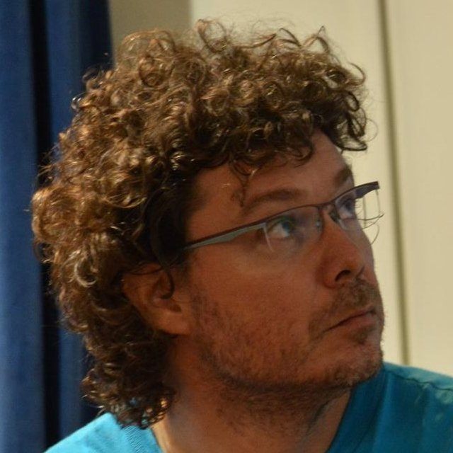
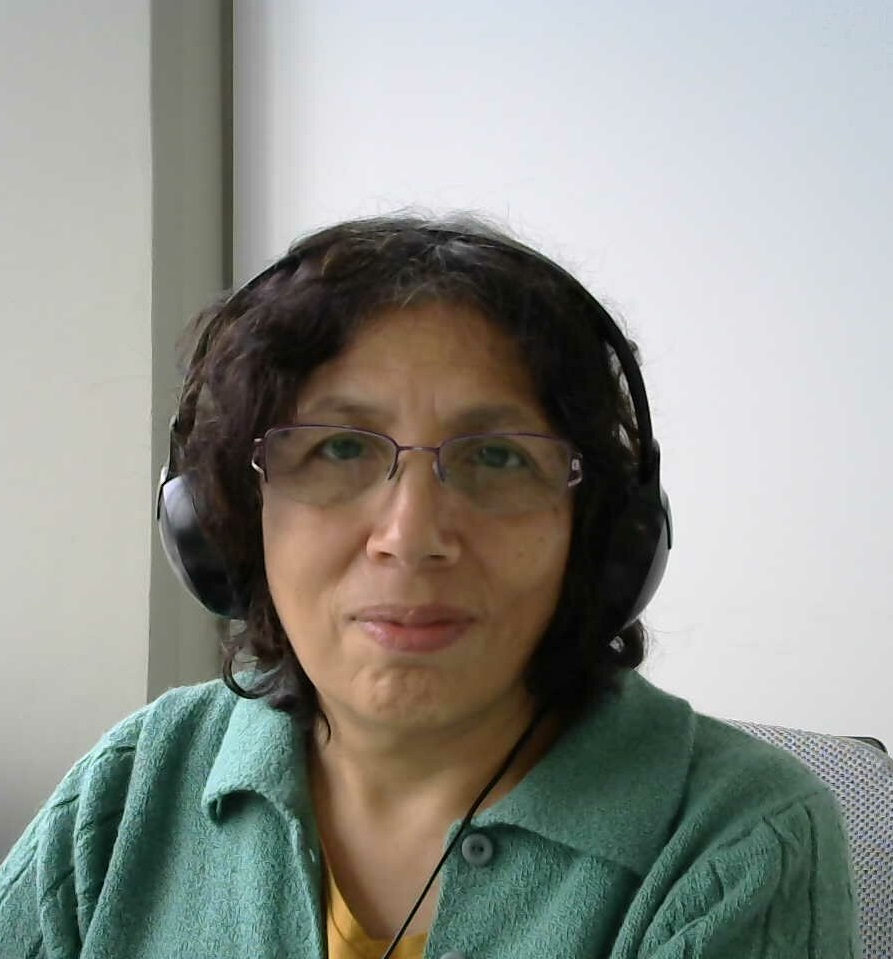
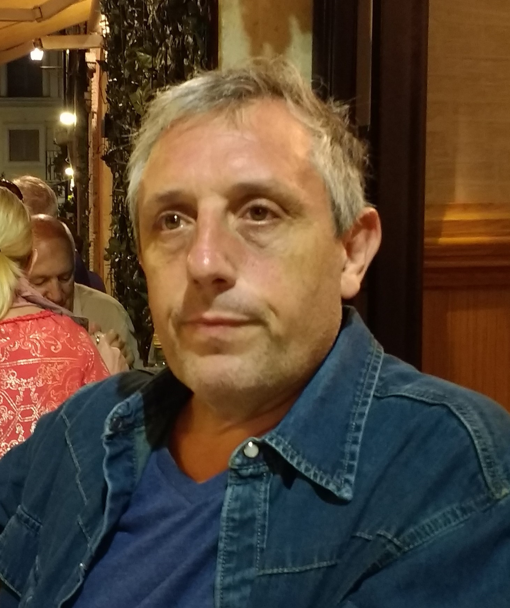

Coordinación General
| Alejandro Oliveros (UNTREF) | |
|  | Gabriela Arévalo (UNQ - Fundación FLOR) |
| Sandra D´Agostino (UNLP) | |
| Gustavo Guaragna (Snoop Consulting) |
Coordinación Ejecutiva
|
|
Alejandra Villa (SADIO) |
 |
Claudia Pons (SADIO - UNLP/UAI) |
AGRANDA - Simposio Argentino de Ciencia de Datos y GRANdes DAtos
 |
Cecilia Ruz (AFIP, CAECE, UBA) |
|
 |
Manuela Cerdeiro (Fundación Sadosky) |
|
|
Pablo Turjanski (UBA) |

ASAI - Simposio Argentino de Inteligencia Artificial
 |
Bruno Bianchi (FCEN UBA / ICC, CONICET) |
|
|
Maximiliano Budán (Universidad Nacional del Sur / Universidad Nacional de Santiago del Estero / CONICET) |

ASSE - Simposio Argentino de Ingeniería de Software
|
|
Diego Fontdevila (UNTREF) |
|
 |
Germán Regis (UNRC) |
 |
Marisa Panizzi (UnaHur) |

CAI - Congreso Argentino de AgroInformática
 |
Flavio Capraro (UNSJ) |
 |
Sandro Camargo (UNIPAMPA) |
 |
Mauro Pinotti (INTA) |
CAIS - Congreso Argentino de Informática y Salud
 |
Joia Nuñez (Wúru - Entelai - Subcomisión Tecnologías de Información y Comunicación, Sociedad Argentina de Pediatría) |
|  | Pedro Escobar (Universidad Nacional del Centro - UNICEN, UNOPS) |
EST - Concurso de Trabajos Estudiantiles
 |
Patricia Bazán (Facultad de Informática, UNLP) |
| Gladys Dapozo (UNNE) | |
|
|
Paula Angeleri (Universidad de Belgrano) |
IETF Day - Taller del Grupo de Trabajo de Ingeniería de Internet/Argentina
|
|
Gustavo Mercado (UTN FRM) |
|
|
Marcela Orbiscay (IANIGLA – CONICET - Mendoza) |
|
|
Ignacio Alvarez-Hamelin (FIUBA) |

.jpg)

JUI - Jornadas de Vinculación Universidad - Industria
 |
Ricardo Medel (Fundación Sadosky) |
 |
Gonzalo Zabala (Playbots S.A. y UAI) |
SACS - Simposio Argentino de Ciberseguridad
 |
Gladys Martínez (Fuerza Aérea) |
 |
Mauro Vega (UNQ / Hospital El Cruce) |
| Matías Sliafertas |
SAEI - Simposio Argentino de Educación en Informática
 |
Claudia Queiruga (LINTI - UNLP) |
 |
César Pairetti (UNR, SU) |
SAHTI - Simposio Argentino de Historia, Tecnologías e Informática
 |
Karina Bianculli (CEHIS, UNMdP) |
.jpg) |
Bruno Massare (UNSaM) |
|  | Nicolás Wolowick (FaMAF - UNC) |
SAIC - Simposio Argentino en Ingeniería en Computación
| Orlando Micolini (UNC) | |
| Silvia Castro (UNS) | |
 |
Osvaldo Marianatti (Universidad de Mendoza) |
SAIV - Simposio Argentino de Imágenes y Visión
| 
|
María Elena Buemi (DC-FCEyN UBA/ICC-Conicet/UNSAM) |
 |
Daniel Acevedo (DC-FCEyN UBA/ICC-Conicet) |
SID - Simposio Argentino de Informática y Derecho
 |
Ariel Vercelli (CONICET / IESCT-UNQ) |
 |
Sr. Marcus Vinícius Filgueiras (UNIFLU / ISECENSA, Brasil) |
 |
Wilma Arellano Toledo (UCM / OdiseIA, España) |
SIE - Simposio de Informática en el Estado
 |
Silvana Rica (JGM de la Nación) |
 |
Agustín Simer |
 |
Marcelo Daniel Petroff (UNRN) |
SIIIO - Simposio Argentino de Informática Industrial e Investigación Operativa
 |
Mariana Cóccola (UTN Santa Fe - CONICET) |
 |
Javier Marenco (UTDT) |
 |
Analía Rodriguez (IPQA (CONICET- UNC) |
STS - Simposio Argentino sobre Tecnología y Sociedad
 |
Leandro Antonelli (Lifia, Facultad de Informática - Universidad Nacional de La Plata, Argentina) |
|  | Luis Mariano Bibbo (Lifia, Facultad de Informática - Universidad Nacional de La Plata, Argentina) |
 |
Celeste Molpeceres (CONICET - Universidad Nacional de Mar del Plata, Argentina) |
 |
Greta Liz Clinckspoor (CONICET Mar del Plata - IHAM, FAUD, UNMDP) |
 |
Cecilia Roma (Universidad Abierta Interamericana) |